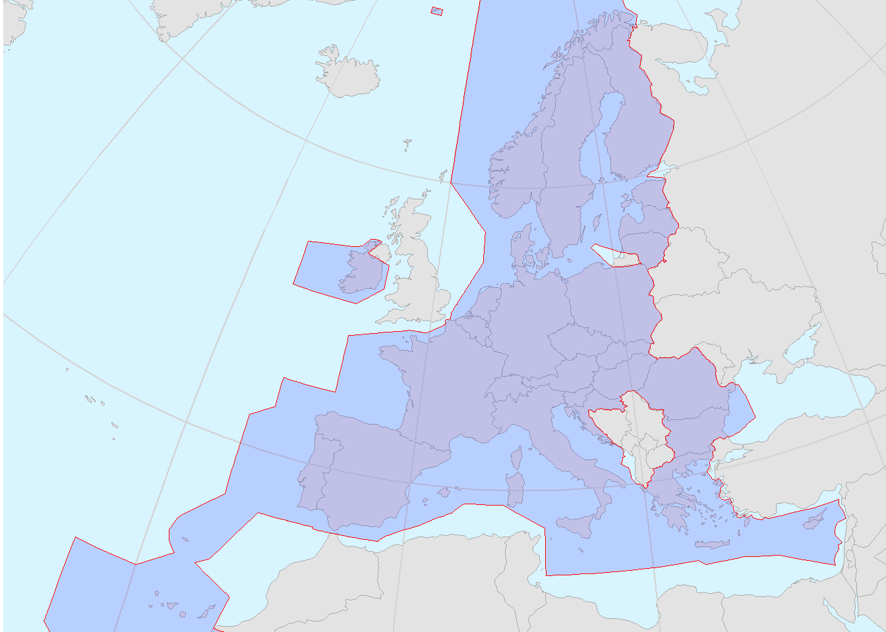

PRB Annual Monitoring Report (AMR)
2022 Performance - High Level Results
IFR movements
8,345 (’000) flights
(+52% vs 2021)
-
En route service units (SUs)
108,380 (’000) SUs
(+3.8% vs plan)
(+62% vs 2021)
Safety KPA
EoSM (ANSPs on/above the target):
Risk management: 18 (+7 vs plan)
Other MOs: 27 (-3 vs plan)
Environment KPA
KEA: 2.96%
(+0.59p.p. vs target)
Capacity KPA
En route ATFM delay: 1.69 min/flt
(+1.19 min/flt vs target)
Cost-Efficiency KPA
AUC trend: -43.9%
(-5.4p.p. vs DUC trend)
2022 saw traffic in many parts of Europe rebound. The lack of capacity observed in 2018 and 2019 reappeared as traffic increased, with some Member States not able to provide the capacity required to keep delay at or below the target.
This lack of capacity also resulted in poorer horizontal flight efficiency and contributed to missing the the Union-wide targets for KEA by a substantial amount. This was exacerbated by a shift in traffic flows caused by Russia’s war of aggression against Ukraine the avoidance of the airspace of Belorussia, Russia and Ukraine.
This dashboard, and the 2022 monitoring report, highlight a considerable variation in performance across Member States. Some ANSPs rose to the challenges of the recovery of traffic and the shift in traffic flows. For others, performance deteriorated. This deterioration, for some, resulted from issues outside of the control of the ANSP. For others, the deterioration stems from a lack of investment in capacity, which must be a focus for the coming years.
Despite the mixed environment, capacity, and cost-efficiency performance, safety measured under the performance and charging scheme has remained positive throughout 2022.
A review of this, and earlier RP3 monitoring reports will provide useful insights for ongoing Member State discussions about possible regulatory arrangements to support the achievement of future KPA objectives.
SES geographical scope
SES Regulation covers:
29 States
29 En route charging zones
26 Terminal charging zones
49 ACCs
145 Airports
PRB Annual Monitoring Report
Under Commission Implementing Regulation (EU) 2019/317 (herein referred to as the Regulation), monitoring is one of the primary tasks of the Performance Review Body (PRB). It ensures that Member States, the European Commission, and stakeholders are informed about how Air Navigation Service Providers (ANSPs) perform in relation to their performance targets.
The legal basis for monitoring the performance of air traffic management in the SES area is defined in Article 11 of Regulation (EC) 549/2004 (the Framework Regulation) and in Article 3 of the Regulation.